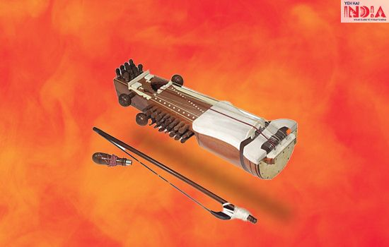
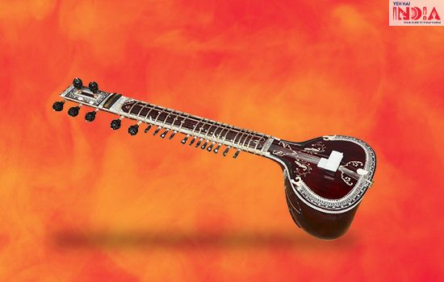
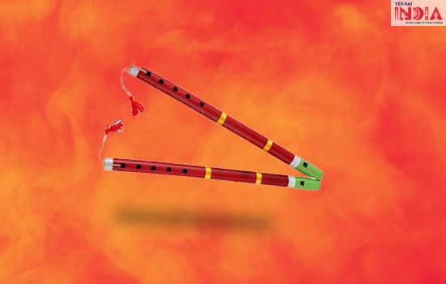

Indian Traditional Musical Instruments
|
Sarangi instrument forms an important part of Hindustani music. It is believed that Sarangi is made up of two words- Sar, meaning “essence”, and Ang, meaning “limb/part”. Another theory also says that Sarangi is derived from “sol rang”, which simply means a hundred colors. It is a block like structure with three hollow chambers, namely- pet, chaati and magaj. The pet is the lower chamber and is covered with goat skin, on which a think strip of leather is placed. There are three main playing strings i this instrument, and players use fingertips, nails and surrounding flesh to play them. Not only is this difficult to play, but also difficult to master. |
 |
|  |
Sitar has a long neck with twenty metal frets and seven cords. These frets are adjoined with thirteen strings which are tuned to the notes of raga. A round shape or a gourd which acts as a sound board is grounded at the lower end of the neck of the sitar. |
| Flute is an instrument which provides exuberance in the mind and soul. Flute is structured into cylindrical tube of uniform bore. To produce sound, one must hold the holes with fingers of left and right variations. Similarly, variations of pitch are generated by the length of air column. | |
|
The harmonium is a traditional and popular musical instrument of India. The harmonium has a keyboard of over two and one-half octaves and works on a system of bellows. The keyboard is played with the right hand while the left hand is used to operate the bellows. Harmonium is more popular in North India than in the South. |
|
|
Algoza is an instrument that is dying in the new India. Used mainly in the music that originates from Sindh, Rajasthan, Punjab and Baloch, Algoze remains popular in folk music. However, we see less and less of it in mainstream music. It is a flute like instrument with two wooden pipes, attached through a string. The number of holes on each pipe vary. One flute is used for melody, while the other plays drone. It is played by keeping three fingers on each side of the reed and blowing air into it. Recently, it has gained much love in UK to cater to the Punjabi population residing there. |
 |